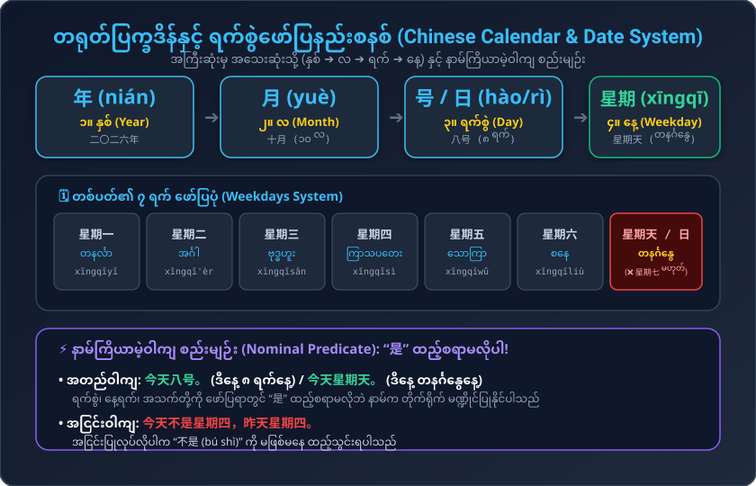
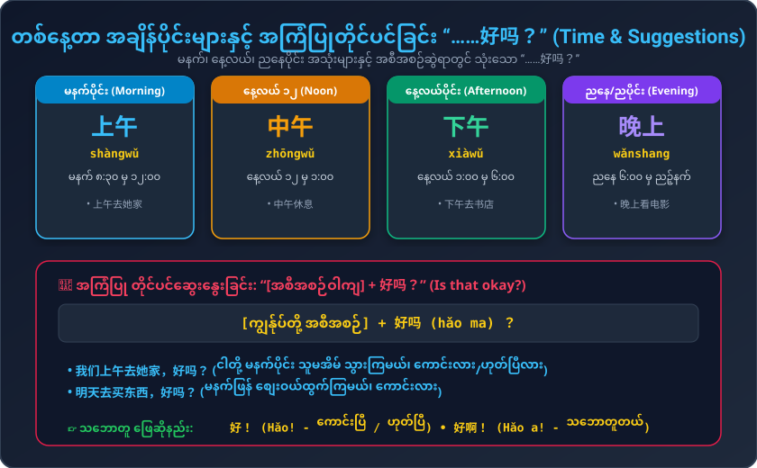

ရက်စွဲ၊ လ၊ နေ့ရက်များ (Weekdays)၊ မွေးနေ့မေးနည်း၊ နာမ်ကြိယာမဲ့ဝါကျ (Nominal Predicate) နှင့် အကြံပြုတိုင်ပင်ခြင်း "……好吗？"
ရက်စွဲ၊ မွေးနေ့၊ တစ်ပတ်တာ နေ့ရက်များနှင့် အစီအစဉ်ဆွေးနွေးရာတွင် မရှိမဖြစ် အခြေခံဝါကျများ
ရက်စွဲနှင့် ညနေခင်း အစီအစဉ်မေးခြင်း နှင့် မိတ်ဆွေ၏ မွေးနေ့အကြောင်း တိုင်ပင်ခြင်း
အကြီးဆုံးမှ အသေးဆုံးသို့ (နှစ် ➔ လ ➔ ရက် ➔ နေ့) နှင့် "是" ထည့်စရာမလိုသော နာမ်မဏ္ဍိုင်ဝါကျများ

အချိန်ပြပုဒ်များ နေရာချထားပုံနှင့် တစ်ဖက်သား သဘောထားမေးမြန်းနည်း

တရုတ်ဝါကျများတွင် အချိန်ပြစကားလုံးသည် ကတ္တား၏ ရှေ့ သို့မဟုတ် နောက်တွင် ကပ်လျက် လာပါသည်: • 晚上你做什么？ (သို့မဟုတ်) 你晚上做什么？ • 我们上午去她家。 (ငါတို့ မနက်ပိုင်း သွားကြမယ်)
အစီအစဉ်တစ်ခု တင်ပြပြီးနောက် “……好吗？” ထည့်လိုက်ပါက ယဉ်ကျေးစွာ သဘောထားတောင်းခံခြင်း ဖြစ်လာသည်: • 我们上午去她家，好吗？ (မနက်ပိုင်းသွားမယ်၊ ကောင်းလား) 👉 အဖြေ: 好！ (ကောင်းပြီ) / 好啊！ (သဘောတူတယ်)
အသံထွက်၊ မြန်မာပြန် နှင့် ဖွဲ့စည်းပုံ အစိတ်အပိုင်းများ
ပထမအသံ + တတိယအသံ တွဲဖတ်ခြင်း နှင့် နေ့စဉ်လှုပ်ရှားမှု စာပိုဒ်နားထောင်ခြင်း
၁ သံ (ပြားပြားအမြင့် ၅-၅) မှ ၃ သံ (ကျဆင်းပြီး အောက်တွင် ဝိုက်တက်သံ ၂-၁-၄) သို့ ကူးပြောင်းလေ့ကျင့်ပါ:
今天星期天，我不学习。上午我去商店，下午我去看朋友，晚上我写信。
Jīntiān xīngqītiān, wǒ bù xuéxí. Shàngwǔ wǒ qù shāngdiàn, xiàwǔ wǒ qù kàn péngyou, wǎnshang wǒ xiě xìn.
👉 မြန်မာပြန်: ဒီနေ့ တနင်္ဂနွေနေ့ပါ၊ ကျွန်တော် စာမလေ့လာပါဘူး (ကျောင်းမတက်ပါ)။ မနက်ပိုင်းမှာ စတိုးဆိုင်သွားမယ်၊ နေ့လယ်ပိုင်းမှာ မိတ်ဆွေကို သွားတွေ့မယ်၊ ညပိုင်းမှာတော့ စာရေးပါမယ်။
ရက်စွဲ၊ မွေးနေ့နှင့် နာမ်ကြိယာမဲ့ဝါကျများကို စစ်ဆေးစမ်းသပ်ပါ